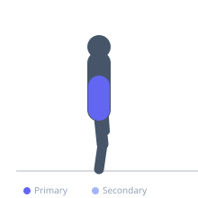
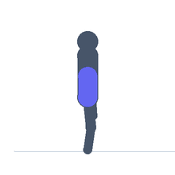

Exercise guide / McGill Curl-Up
McGill Curl-Up
The McGill curl-up is a modified crunch developed by spine researcher Dr. Stuart McGill to target the rectus abdominis with minimal compressive load on the lumbar discs. The exercise differs from a standard crunch in that the hands are placed under the lumbar curve to preserve its natural lordosis, and only the head, neck, and upper shoulders are lifted off the floor — avoiding the full spinal flexion that increases intradiscal pressure. It is widely recommended as a spine-safe abdominal exercise in rehabilitation and clinical populations.
Primary muscles
rectus abdominis
Secondary muscles
transverse abdominis
Stabilizers
erector spinae
Equipment
No Equipment (Bodyweight)


Starting position
- Lie on your back with one leg straight and one knee bent, foot flat on the floor. Place both hands palms-down under the small of the lower back to support its natural curve.
Setup
- Use a mat. The hands-under-lumbar position is non-negotiable for the McGill protocol — it preserves spinal lordosis.
Steps
- Step 1: Lie supine with one knee bent, one leg straight. Hands under the lumbar curve.
- Step 2: Brace the entire core — think about creating tension in a corset around your waist.
- Step 3: Raise only the head, neck, and upper shoulders off the floor — the elbows remain on the floor.
- Step 4: Hold the top position for 7–8 seconds with continuous bracing.
- Step 5: Lower with control, rest briefly, and repeat.
Coaching cues
- Hands under the low back — keep the arch
- Lift eyes to the ceiling, not to your knees
- Brace like you are about to get punched
Breathing
- Exhale during the hold. Breathe shallowly to maintain the brace. Do not hold breath for the entire isometric duration.
Range of motion
- Only lift the head, neck, and upper shoulders. The lower back remains in contact with the hands throughout. This is not a full sit-up.
Tempo
- Slow initiation (2 seconds), 7–8 second hold, 2–3 second lower. Perform 3–5 repetitions per set.
Common mistakes
- Removing the hands from under the lower back — this defeats the purpose
- Flexing the spine significantly as in a standard crunch
- Pulling the neck with the hands placed behind the head (the McGill variation keeps hands under the lumbar)
Safety
- This exercise is specifically designed for spine health and rehabilitation contexts.
- The low ROM and preserved lordosis make it appropriate for those with disc pathology when cleared by a clinician.
Training
- strength: 3–8 reps
- endurance: 8–12 reps
- strength: 2–3 sets
- endurance: 2–3 sets
- Rest: {'strength': 60, 'endurance': 45}